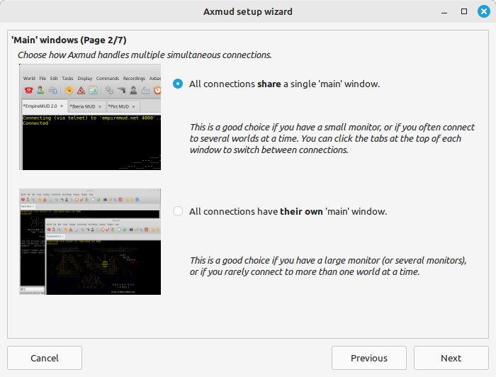

When you run Axmud for the first time you’ll see the setup wizard.

This window is self-explanatory. If you’re happy with standard settings, you can click the Cancel button at any time.
The Connections window appears whenever you start Axmud.
On the left you’ll see a list of pre-configured worlds.
Pre-configured means that Axmud already knows a lot about the world, such as how to draw maps in the automapper and how to read the current character’s health points.
If you’re very lucky, your favourite world will be one of those listed. Scroll through the list and click on the world to select it.
Note that 'pre-configured' does not mean this world requires no configuration at all. The authors spent only a few hours, not hundreds of hours, at each world; there are invariably many features we didn't notice during that time.
Axmud also provides a much longer list of worlds – over six hundred of them, in the current version – from which you can choose. Click on the world button to see this list.
Axmud knows nothing about these worlds, besides how to connect to them. Features such as the automapper must be configured before they can be used.
Click on the spanner (wrench) button to return to the pre-configured world list.
Click on these buttons to sort the list alphabetically or randomly.
If you see this orange button, Axmud has some system messages to display. Click the button to read them, if you want to.
Some worlds, which contain explicit sexual themes, are marked as being suitable only for adults. The authors make no guarantees that this information is complete and correct.
You can select a world from the list, or you can click ‘Create new world’ to create a new world profile.
A world’s connection details are usually displayed prominently on the its own website, if it has one. You can also make use of referrer websites like mudstats.com, The Mud Connector or mudlistings.com.
A protocol defines the ‘language’ that computers use to talk to each other.
Axmud supports all three protocols currently in common use. The oldest protocol, telnet, offers no encryption at all. SSH and SSL communications are encrypted.
Unfortunately, most worlds accept only telnet connections. Some worlds accept SSL connections and a very small number of them accept SSH. If you’re using a pre-configured world, the default protocol is either SSH or SSL, if the world supports them, or telnet, if not.
Switching between one protocol and the other usually means specifying a different port number. It’s not enough to simply click on the SSH or SSL buttons. Ask administrators at your favourite worlds if they support SSH/SSL and, if not, why not.
If you already have an account at the world, you can enter your username and password by clicking the Add button.
If you’re using a pre-configured world, Axmud will automatically login if you add your username and password here.
Even if you’re not using a pre-configured world, it’s still a good idea to enter these details now, because Axmud creates character profiles for each character you play.
Some worlds have separate account and character names. If so, you should enter both.
When you’re ready, use one of the four buttons at the bottom of the window.